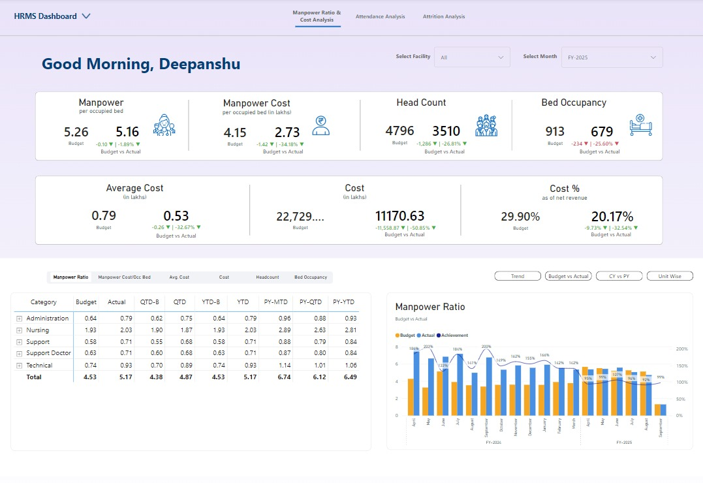
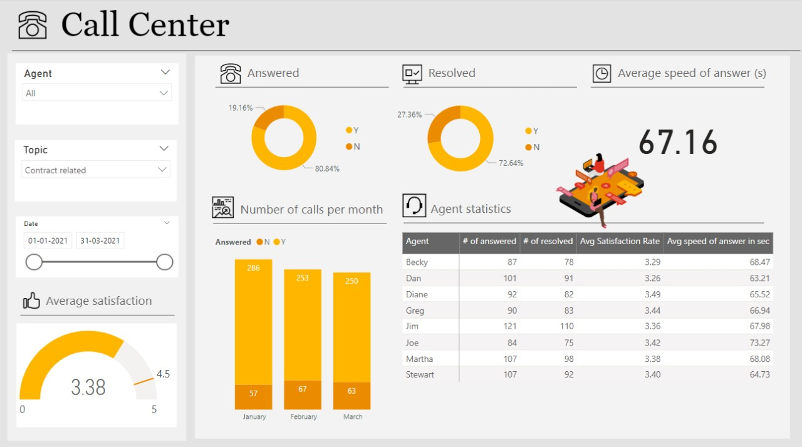
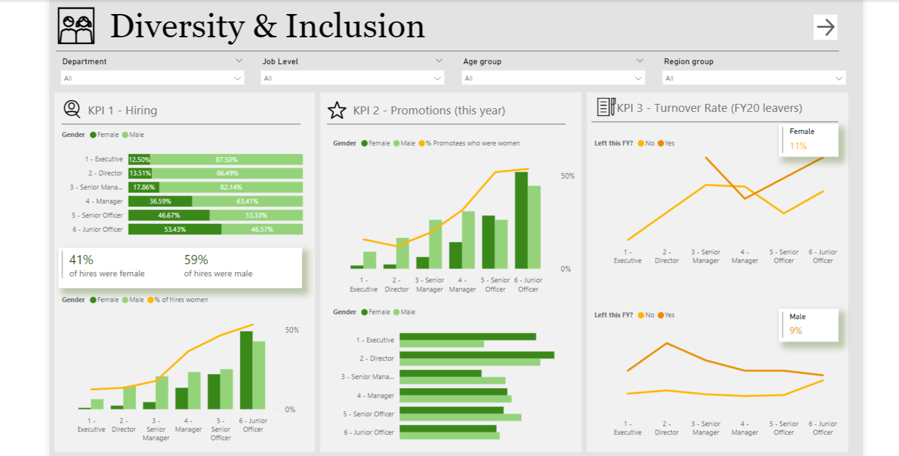
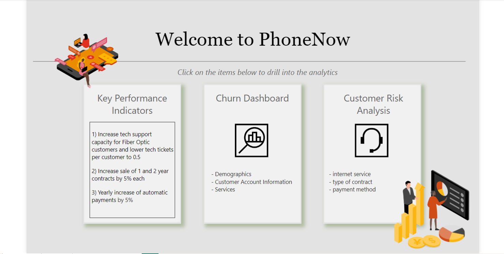

I meticulously developed an HRMS dashboard for the management team, offering a detailed view of key HR metrics such as headcount, attrition, and attendance trends. Beyond displaying crucial KPIs, the dashboard allows in-depth exploration of employee performance, recruitment, and workforce data, providing a holistic view of HR operations to drive strategic decision-making.


This project involved gathering requirements from stakeholders to understand their key metrics and goals. Based on these requirements, I developed an interactive Power BI dashboard that visualizes manpower budgets, costs, and KPIs. The dashboard provides clear insights through intuitive charts and KPI tiles, enabling data-driven decision-making. .

This Dashboard visualizes key metrics related to workforce diversity, equity, and inclusion. It tracks data on employee demographics, representation, inclusion initiatives, and workplace equality, helping organizations assess progress, identify gaps, and make data-driven decisions to foster a more inclusive environment.

The dashboard provides valuable insights into key metrics such as churn rate, customer retention, and reasons for churn, helping businesses identify trends, segment customers by risk levels, and implement strategies to retain at-risk customers. By visualizing churn data, companies can proactively address issues affecting customer satisfaction and loyalty, ultimately improving retention and reducing the financial impact of lost customers.